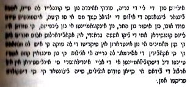
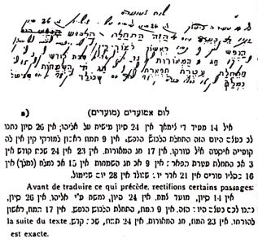
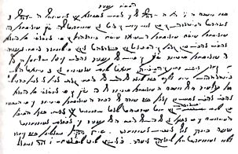
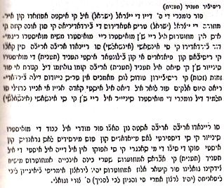
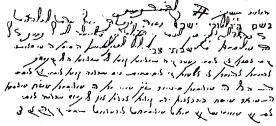

İşte metnin Fransızca çevirisinin içeriği:
«Senyörümüz, kralımız, Mesih’imiz S-S.’nin{85} şanını arttıran 18 emri.
1 - Tek ve eşsiz olan ve onun dışında hiçbir benzeri mevcut olmayan Yaratıcıya olan imanı korumaya itina göster.
2 - Gerçek Mesih olan Mesih’ine inan; şanını artıran David’in soyundan gelen senyörümüz, kralımız S.S. haricinde hiçbir kurtarıcı yoktur.
3 - Ne Tanrının ne de Mesih’inin adına sahte yemin etme, zira Senyörünün adı ondan alınmıştır ve bu kutsal varlığa saygısızlık edilmez.
4 – Tanrının ve Mesih’in adı geçtiği zaman saygı duyulur. Hemcinsine göre üstün olan doğası nedeniyle her kim olursa olsun ona saygı göstermelidir.
5 - Mesih’in sırrını anlatmak ve incelemek için toplantıdan toplantıya koşuşturmalıdır.
6 - Kendilerinden ne kadar nefret ederlerse etsinler aralarında (Sabetaycılar), diğer uluslara mensup olanları öldürecek, katiller bulunmaz.
7- 16 Kislev günü herkes bir araya gelir ve herkes Mesih’le ilgili başkalarından duyduğunu ve Mesih’e olan inancın gizemi hakkında ne anladıysa yanındakine anlatır.
8 - Zina onlar arasında hüküm süremez, Beriya{86} kuralı mevcut olsa bile, buna rağmen hırsızlar için tedbir almak gerekir.
9 - Yalan şahittik yapılmaz, mümin{87} olmasalar bile hem cinsine yalan söylenmez ve birbirini ele vermek olmaz.
10 - Türban{88} dininde olan birini kendisi inansa bile aramıza almak için zor kullanmaya için verilmez, zira savaşçılar gurubuna bağlı bir kimse tam bir inanç ve ruh arzusu ile hiç bir şekilde tereddüt etmeden aniden bizi katılır.
11 - Aralarında kıskançlık yoktur ve kendilerine ait olmayan şeyleri açgözlülük ve hırsla istemezler.
12 - Kislev ayının 16’sındaki bayram büyük sevinçle kutlanır.
13 - Kişiler birbirine karşı iyiliksever ve merhametli olmalıdır ve hemcinsinin istenci için kendi istenci gibi çaba sarf etmelidir.
14 - Her gün gizlice Mezamir okunmalıdır.
15 - Her ayın doğuşu izlenmelidir ve ayın çehresini güneşle karşı karşıya gelmek üzere çevirmesi ve ay ile güneşin yüz yüze{89} bakmaları için dua edilmelidir.
16 - Türklerin gözlerini boyamak için onların adetlerine dikkat edilmelidir. Mecbur olmadıkları (Sabetaycılar) Ramazan orucu ve kurban için de böyledir. Gözün gördüğü her şey yerine getirilmelidir.
17 - Onlarla evlilik sözleşmesi yapılmamalıdır (Müslümanlarla).
18 - Oğulların sünnetine itina gösterilmelidir ve bunu aziz Halkın utancını kaldırmak için yapmalıdır.
Bazıları Beriya (yaradılış) Yasasına ait olduğu halde bu 18 tespit emiri tespit ettim, çünkü İsrail’in oğlu şeytandan ve onun lejyonundan intikam alacak kadar sağlam bir saltanata erişmedi. O çağda, her şey eşit olacak; hiç bir savunma ihtiyacı, izne tabi hiçbir şey, kirlilik, saflık olmayacak, hepsi, en küçükten büyüğe kadar beni tanıyacaklar. Mümin olan ve muharebe anlamına gelen türban gizemine girmemiş dostlara, ifşa gününe kadar Beria (yaratılış) ve Akilut’a (intişar) hiçbir şey eksiltmeden özenle uymalarını bildir. Bu durumda, hayat ağacının altına nüfuz edecekler ve hepsi birer melek olacaklar. İlahi irade yakında ortaya çıkmalarını sağlasın. Âmin.»
Sabetay Sevi’nin emir buyurduğu ve burada (a) ile gösterdiğimiz bayramlar listesi dışında adları Karakaş Rüştü ve genç bir kapancı tarafından anılan bayramların listesini de veriyoruz.

Ribbi Abraham Danon’un anlaşılır hale getirmeyi denediği bu bayramların anlamlarını inceleyelim:
1 - 14 Sivan, Moed Tsemah (Tarım bayramı). Danon, Tsemah sözcüğünün tam olarak ne anlama geldiğini incelemiştir. Ona göre, bu sözcüğün seçilme nedeni, Sabetay’ın bir diğer adı olan Tsvi’yi anımsatmasıdır ve bu ad şu aynı ayette mevcuttur “Bayom hahu yihyve Tsemah Ad... Tsvi olehavod ofri haaretz legaon oltiferet lifleytat Yisrael”, yani ‘İsraillilerin kalıntılarının şöhreti ebediyetin tohumu ile bezenecek, ve toprağın meyvesi onların gururu ve süsü olacak (Isaya 4/2)”
Danon’un söylediğine göre, burada, Talmutçu bir geleneğe göre Tsemah adlı Mesih’in en yüksek mertebeye yükselişine şahit olacak bir bayramın, yani Paskalyanın da bir tanımı yapılmaktadır.
Bize göre, Tsemah, doğanın ilkbahar ile başlangıç yapan uyanışını simgeler. Bu bayramın, 24 Sivan bayramı ile benzerlikleri vardır.
2 - 24 Sivan*{}, Nim Shah Alyede Eliaou (Sabetay’ın Elie tarafından Tanrıya adanma bayramı). Burada Elie, Sabetay’ın peygamber olarak Tanrıya adanışını ilan eden arızî peygamber Gazze’li Nathan’ı tanımlar.
3 - 26 Sivan*, Natenou lahem beetsem ayom aze (bayramın anlamı: “o size o gün verildi”). Danon, Natenoou=verdiler sözcüğünü netano şeklinde okumak istemiş, ve “o (Sabetay) onu size o gün verdi” anlamı çıkmıştır. Danon’un kendisi de söylediği gibi, bu cümle bu şekilde sunulduğunda hiç bir anlamı yoktur. Yukarıda yayınladığımız metni kopyalayan kimse lahem (size) sözcüğü yerine lev (yürek) sözcüğünü koymuş ve böylece natenou lev beetsem ayom aze cümleli meydana gelmiştir. Bu cümledeki yürek ile daha aşağıda inceleyeceğimiz kuzu bayramı veya dört gönül ile herhangi bir şekilde ilişki olabilir mi?
4 - 9 Tammouz, Adhalat alevoush anefesh (Ruhun kuşanmaya başlama bayramı). Ruhun kuşanması ifadesinden Sabetay’ın esinlenmeye başlaması anlaşılmalıdır, yani o, esinlenmenin başlangıcını bayram günü olarak ilan etmek istemiş olabilir.
5 - 17 Tammouz, Rishon Leorat (İdrakinin ilk gününü kutlayan bayram). Görülüyor ki bu tarih bir Yahudi orucu gününe tekabül ediyor. Oruçların faydasızlığını bildirmek için Sabetay’ın bu bayramı tayin ettiği ileri sürülüyor. Bu tahmin bize pek ciddi gelmiyor. Bu bayram münasebetiyle, Sefer Ahalomot Kets apelaot’ın yazarı, Sabetay’ın eniştesi Samuel Primo’nun doğum gününü yüceltmek için Abidos’ta kutlanan hag Çel Neviim (Peygamberler Bayramı) adının 17 Tammouz’a verildiğini yazmıştır.{90}
6 - 23 Tammouz, Hag amerot (Aydınlanma bayramı). 5426 yılının 23 Tammouz gününde Sabetay Yahudi topluluklarına bir mektup göndererek 9 Ab orucunu büyük bayram şeklinde değiştirmelerini ve bu bayramı sevinç içinde, evlerini aydınlatarak kutlamalarını emretti. Bu, Mesih’in gelişi ile başlayan bir tür dini reform hareketinin başlangıç tarihiydi{91}.
7 - 24 Tammouz, Şabat Kodeş (Değerli Cumartesi bayramı). Sabetay değerli Cumartesi olan 23 Temmuz’u büyük Cumartesi adı altında yeni bir bayram olarak ilan etmeyi düşünmüştü. Pazartesiyi Cumartesi olarak değiştirdi. Bu reformu karısı Sara’nın şerefine yaptı{92}.
8 - 3 Ab, Adhalat Atarat Aperet (Şanlı Tacı Giymenin Başlangıç bayramı). Danon, bu bayramın kökeni bilinmemektedir ve Kahire’deyken sarraf başı Rafael Jozef Çelebi’nin yanındaki görevinde elde ettiği başarıyı hatırlatıyor olabilir der. Bu başarı parlak çalışmalarının ilk izleridir. Diğer yandan, bu tarihin kökeni şu olaydan kaynaklanıyor olabilir: Yukarıda görüldüğü gibi, Polonyalı haham Nehemya Kohen, Sabetay’ı bulmaya ve onunla Mesihlik çağı hakkında konuşmaya gider. Kohen Ab ayının 1’inde Abidos’a gelir ve Sevi ile üç gün üç gece süren, yani Ab ayının 3’ünde son bulan bir tartışma yaparlar. Giderken, Sabetaycılara göre Sevi’nin kazanmış olması gereken, tartışmanın zaferinden hiç bahsetmediği için, bu zaferi hatırlatmak için anılan gün bayram tayin edilmiştir.{93}
9 - 9 Ab Hag, Asemahot (Eğlence bayramı). Kudüs tapınağı harabeleri matem yıldönümünün eğlenceyle kutlanmaya başlanmasıdır, zira sabetaycıların söylediğine göre bu tarih Sabetay’ın doğum günüdür.
10 - 15 Ab, nimlah (hat ile yazılır) Sabetay’ın tuzlandığı gündür{94}. Haf ile yazıldığında bu bayram onun kral ilan edildiği günü ifade eder.
11 - 16 Kislev (Purim bayramı). 7 ve 12 numaralı emirlerde bu bayramdan bahsedilir. Bu tarih, sabetaycıların din değiştirdiği gündür. Bu tarihi bir oruç gününden önceye rast getirirler.{95}
12 - 21 Adar, Yom Şemalah (Sabetay’ın doğum günü). Bu tarih, onun doğum günü olduğu sanılan 9 Ab ile çelişmektedir.
13 - 28 Adar, Yom Şenimol (Sabetay’ın sünnet olduğu gün). Bu tarihe göre, Sabetay 9 Ab değil 21 Adar günü doğmuştur.
Rosanés bunlara ilaveten şu bayramları da ilave eder{96}:
14 - 16 Tevet (?)
15 - 15 Şevat. Bu Yahudilerin bilinen bayramıdır.
3 - 15 Adar. Bu, Yahudilerin tanıdığı Pourim’dir.
4 - 22 Adar, kuzu bayramı.
b) Karakaşzade Rüştü’nün söylediği
İşte Rüştü tarafından sıralanan bayramların adları:
1 - Kuzu bayramı. Bu bayram 22 Adar’da kutlanırdı. Her sene özel bir törenle bir gece ilk kez bir kuzunun yendiği bir bayramdı. O halde bu töreni oluşturan neydi? Evli iki erkek ve iki kadından oluşan en az dört kişi kuzu bayramına iştirak etmelidir. Bu sayı artırılabilir ama daima evli karşı cinslerden oluşan çift sayıdan oluşmalıdır. Şık giyimli ve mücevherlerini takmış kadınlar sofrayı hazırlarlar. Yemekten sonra eğlenceye başlanır ve belirli bir anda büyük mumlar söndürülerek ortalık karartılır. Kuzu bayramının anlamından kaynaklanan aşkı en uzun yaşatmayı bilenler o gecenin kahramanıdır. Bu bayramdan sonra doğan çocuklar tarikatın kendisi kadar aziz sayılırlar. Bu bayram dört gönül bayramı olarak da bilinir.
Bakın Kapancı gurubundan genç bir Sabetaycı bu bayramı nasıl tasvir ediyor{97}.
«Sanırım “Büyük mumların sönmesi” olarak anılan tören Karakaş gurubu tarafından da uygulanmaktadır. Ayrıca, benim gurubumun mensuplarının da eskiden uyguladıklarına inanıyorum; ama itiraf etmeliyim ki buna benzer hiç bir şey görmedim. Henüz yakın bir geçmişe kadar, dönmeler kuzu töreni denilen özel bir tören yapılmadan kuzu eti yemiyorlardı. İlkbahar mevsimine rastlayan belirli bir gecede kuzuları özel bir ayinle kesilerek (lus) hazırlanır ve dualar edilirken pişirilirdi. Dönme ailelerinin her birine kuzudan bir parça düşerdi ve daha sonra bu eti hangi kasaptan olursa olsun satın almakta serbesttiler. Kuzu gecesi denilen bu gece esnasında bekârların kabul edilmediği törenlerde başka dualar da edilirdi. Evli erkekler eşleri ile birlikte orada hazır bulunurlardı. Ben, genç ve bekâr olduğum için oraya katılamadım. Ama bekârlara uygulanan bu yasak, tören esnasında eşlerin değiştirilmesi uygulamasına dayanıyor olsa gerek sanırım. Bu sırrı çözmek için harcadığım çabalarımın hepsi boşa çıktı. Herkesin verdiği cevap şuydu: Evlen o zaman anlarsın».
2 - 27 Adar, Osman Ağa{98} ve on üç mümini (ashabı) anısına yapılan bayram. Büyük şölenlerle kutlanır ve en önemli bayramlardan biri sayılırdı.
3 - Meyve bayramı. Bu, 15 Şevat bayramıdır ve kutlanışı şöyledir: Etrafında sabetaycıların dua ederek tur attığı büyük bir sini (yuvarlak bakır masa) üzerine meyve tabakları konur. Bu törenden sonra, hepsi kuyruk olup ellerinde tuttukları mendillere okunmuş meyve dağıtılmasını beklerler.
4 - Haman bayramı. Yahudilerin Purimidir. Bu bayram esnasında Maase denilen Meqila okunur ve Haman’ın kellaya yani yok etmeyi gerçekleştirmek istediği söylenir.
5 - Jozef bayramı. Bu bayram Hanouca bayramıdır. Zira doğuda geri kalmış toplum, genellikle Mikes’ın peraşasi{99} ile karıştırılan, Yozef tarihindeki Hanuka’nın gerçek önemini bilmez.
6 - Ağaç bayramı. Ağaçlar sulanır ve sulanırken dualar edilir.{100}
7 - Tan bayramı. Yılın belirli bir gününde dönmeler gün doğarken kalkarlar ve karıları ve çocukları ile birlikte kendi özel sinagoglarına gidip dua edip hahamlara sadaka verirler. Bu sadakalar daha sonra fakirlere dağıtılır{101}.
8 - Yılın belirli bir gününde Af bayramı kutlanır. O gün, dönmeler sarı renkli mest ve cüppe{102} giyer, Osman Ağa’nın ruhu önünde secdeye varırlar ve günahlarının affedilmesini dilerler (bu Kippour bayramıdır).
c) Genç Kapancı’nın söylediği:
Genç Kapancı aşağıdaki bayramları rast gele sayar:
1 - Hinali Balouk. Bu bayramın anlamı acaba nedir?
Genç Kapancı bu konu hakkında bir şey söylemez. Hinali Balouk’un Türkçe’de “kınayla boyanmış balık” anlamına gelir. Bu bir açıklama yapmayı gerektirir. Eski bir âdete göre, bir evliliği kutlamak gerektiğinde, erkek nişanlısına parmaklarını boyaması için kına gönderirdi. Evlilik bayramı sekiz gün sürerdi. Bu sürede yeni evli damat evde kalır, bu süre biter bitmez işleriyle uğraşmaya giderdi. O gün, yeni evli gelini büyük (muhtemelen kınaya boyalı) bir balığın üzerinden atlatırlardı. Bu evlatların simgesiydi ve kendisine etrafı evlatlarla çevrili mutlu bir anne olması temenni edilirdi. Bu tören bu soydan gelenler için bir çeşit bayramdı.{103} İşte bize göre bu bayramın kökeni.
Başka bir versiyon daha aklımıza geliyor. Sabetay’ın bir beşiğe bir balık bıraktığı Yahudilerin kurtuluşunun balıklardan oluşan bir burç altında olacağını açıkladığı bilinir. Yahudi İspanyolcasında beşik cuna (kuna olarak telaffuz ediniz) demektir. Bu sözcüğe Türkçedeki “li” takısı ilave edilirse, beşikle ilgili anlamına gelen kounali sözcüğü elde edilir. Bu tören ya da bayramın kaynağını bize aydınlatacak başka biri olmadığı takdirde, biz şahsen bu versiyonu tercih ediyoruz.
2 - Purim, Yahudilerin bilinen bayramı.
3 - Kipir (Kippur) Yahudilerin bilinen bayramı.
4 - Mishibirah. Bu bayram büyük törende okunmuş özel bir methiyenin metninde (Shabbetay, Shabbetay Tsvi) yer almaktadır. Methiye şöyle başlıyor “Senyörümüz ve kralımız, aziz, doğru, Sabetay Sevi, Yakub’un Tanrısının Mesih’ini kutsa”.
5 - Taaniyt = oruç. Bu sözcük genelde tüm oruçları ifade ediyor.
6 - Kuzu, yukarıda anılmıştır.{104}

İşte kopyalanan metnin Raşi karakterlerle sureti.

Oruca başlarken
«Senyör ve kralımız, Mesih’imiz, kurtarıcımız, gerçek Mesih, krallığı en yüksek mertebelere ve sonsuza dek yükselsin, Sabetay Sevi’nin şahsında birleşen gerçeğin üç rabıtası ile İsrail’in şan ve şerefini koruyan ebedî İsrail tanrısı adına. Senyörümüz Sabetay Sevi’nin bu orucunu merhamet ve sevgiyle kabul et. Orucum gökyüzünde gururun ruhu olarak karşılansın. Gerçeğin üç rabıtasının ilahi uyumuna inanan ve senyörümüzün şan ve şerefi için - tanrı çok yükseklerde ve ebedi bir saltanat ihsan eylesin - onun öğrencisi bilgin Barzilay’dan bu günün orucunu tutma emri almış olan herkesin sahip olduğu değer yargılarına ödül olarak, yüce merhametine sığınarak soruyorum, bugün bu oruçtan sonra azalmış olan ve bize ışığı göstermek üzere zekânın kapılarını açıp kurtarıcımızı göndermen için sana yalvaran şu kanımın tükenmesine göz yumabilir misin. Ey kurtarıcım, ebedi tanrım, ağzımdan çıkan sözler ve kalbimin daldığı derin düşünce senin hoşuna gitsin.»
